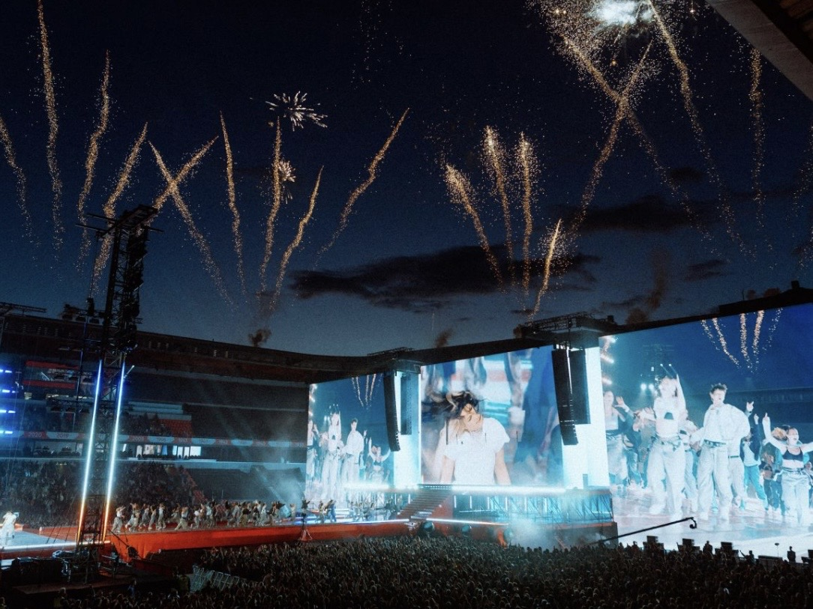

By David
What is LED display contrast ratio? LED display contrast ratio is the difference between the brightest white and the deepest black the screen can produce. It decides how punchy and lifelike an image looks, especially in dark scenes and in bright rooms. This 2026 guide explains how contrast is measured, why published figures mislead, and how buyers should specify contrast for a real project.
Contrast is one of the first numbers on a brochure and one of the least comparable. Two screens can claim the same contrast ratio and look completely different in a real room. The reason is that contrast depends on how it is measured, on the module mask design, and on the light around the screen, none of which appear in the headline number.
This guide is written for buyers who want to compare screens honestly. It covers the difference between static and dynamic contrast, the role of the mask and the black level, and the way ambient light changes everything on site.
Contrast ratio is the luminance of a full white image divided by the luminance of a full black image. A screen that produces 5,000 nits at full white and 5 nits at full black has a contrast ratio of 1,000:1. The higher the ratio, the deeper the blacks appear relative to the whites.
The problem is that an LED screen's black is never truly black. Even when the LEDs are off, the module surface reflects some light and the gap between pixels shows the mask color. This residual reflection sets the floor of the black level and, in a real room, it usually dominates the measured contrast.
Static contrast, sometimes called native contrast, is measured on a single image where white and black are present at the same time. Dynamic contrast measures the brightest white of one image and the darkest black of a different image, often with the brightness adjusted in between. Dynamic figures are much higher and far less meaningful for LED screens.
| Contrast Type | How It Is Measured | What It Tells You |
|---|---|---|
| Static / native | White and black on one image | True simultaneous black level |
| Dynamic | Bright white and dark black from separate images | Marketing figure, limited value |
| ANSI (checkerboard) | Average of light and dark squares | Realistic mixed-content contrast |
| On-site contrast | Measured with room lighting present | The figure the audience actually sees |
A brochure that quotes a dynamic ratio of 10,000:1 tells you almost nothing about the screen. Ask for the static contrast and, ideally, an ANSI checkerboard figure, which reflects real content with both bright and dark areas at once.
Black level is the luminance the screen shows when it should be dark. On an LED screen, black level depends on the mask design and the color of the module surface. A deep black mask absorbs light and hides gaps, improving perceived contrast. A light or glossy mask reflects more light and raises the black level.
This is why fine-pitch indoor screens often use a black or matte mask, while cheaper modules use a lighter surface. The mask does not change the LEDs, but it changes how the screen looks in dark scenes, which is where audience perception of contrast is strongest.
On a dark scene, ambient light reflecting off the module surface can be brighter than the LEDs themselves, washing the scene out until it looks grey. This is why an indoor screen that looks excellent in a dark room can look flat in a bright lobby. The measured contrast in the lab is not the contrast the audience sees.
Two responses help. The first is to reduce ambient light or control it with blinds and lighting design. The second is to choose a screen with a low-reflection mask. Neither changes the LED itself, but together they preserve black level in a real environment.
Contrast and brightness interact. Raising brightness increases the white level and can improve contrast in a bright room, but it also raises power and heat. In a dark room, raising brightness can actually reduce perceived contrast by lifting near-black levels and causing glare.
| Environment | Brightness Priority | Contrast Priority |
|---|---|---|
| Dark control room | Low and stable | High static contrast, black mask |
| Bright lobby | High | Low-reflection mask, high white level |
| Outdoor daylight | Very high | Contrast limited by sunlight reflection |
| Retail window | Moderate to high | Balance to avoid reflection and glare |
Match brightness to the room rather than maximizing it. A screen that is too bright for its space looks harsh and makes black levels worse. The correct brightness is the lowest value that still reads clearly in the room's worst lighting condition.
Contrast describes the extremes; gray scale describes everything between them. A screen with high contrast but poor gray scale shows dark scenes as flat, with banding instead of smooth shadow detail. Both specifications matter for content with subtle lighting, such as film or photography.
The driver IC and controller set the gray scale depth, usually 14 to 16 bits. When a supplier quotes a high contrast figure, ask for the gray scale too. A screen with both a deep black and smooth gray scale looks far better than one that only wins the headline contrast number.
Different applications weight contrast differently. A control room running dark maps and camera feeds needs the deepest black level so operators can read fine detail without glare. A retail window display needs enough white brightness to fight reflection from the street, even if the black level is less deep.
Outdoor advertising sits at one extreme, where sunlight reflecting off the screen surface dominates the contrast and no mask can fully overcome it. For these screens, high brightness and a matte, low-reflection surface matter more than a high black-level figure. Matching the contrast strategy to the application avoids paying for a specification that the environment will not let you use.
Calibration affects perceived contrast across a wall. If one cabinet runs slightly brighter than its neighbor, the eye reads the difference as unevenness rather than as contrast. Point-by-point calibration brings every module to a common white and black level, which makes the whole wall look more contrasty and more uniform at once.
Calibration also preserves contrast over time. As screens age, their black levels drift at different rates. Periodic re-calibration restores the uniformity that the eye reads as contrast. A wall that is never re-calibrated slowly loses its punch even though no single component has failed.
To judge contrast honestly, measure it in the room where the screen will live, with the lighting the screen will face. A light meter reading of the black and white levels, taken at the viewer's position, gives a realistic number. The lab figure and the on-site figure can differ dramatically.
A screen that measures well on site under real lighting will look right every day. A screen that only measures well in a dark lab may still disappoint once the room is furnished and lit. Always test in the environment the audience will see.
Write the contrast requirement as a static figure measured under defined conditions, and require a dark-scene test with the room lighting present. It is not enough to accept a dynamic number, because it can be met by a screen with a poor black level.
Contrast is the specification that makes an LED image look real rather than flat. Buyers who ask for the right measurement, match brightness to the room, and test with real content avoid the disappointment of a screen that looked great in a showroom and grey on site.

For this requirement our range covers it directly: the X Series (front/rear service, common parts across platforms) and the series overview for spare-part lists.
We quote static contrast and ANSI figures, and we will test a dark scene under your room's lighting.
Request Contrast SpecChat on WhatsApp